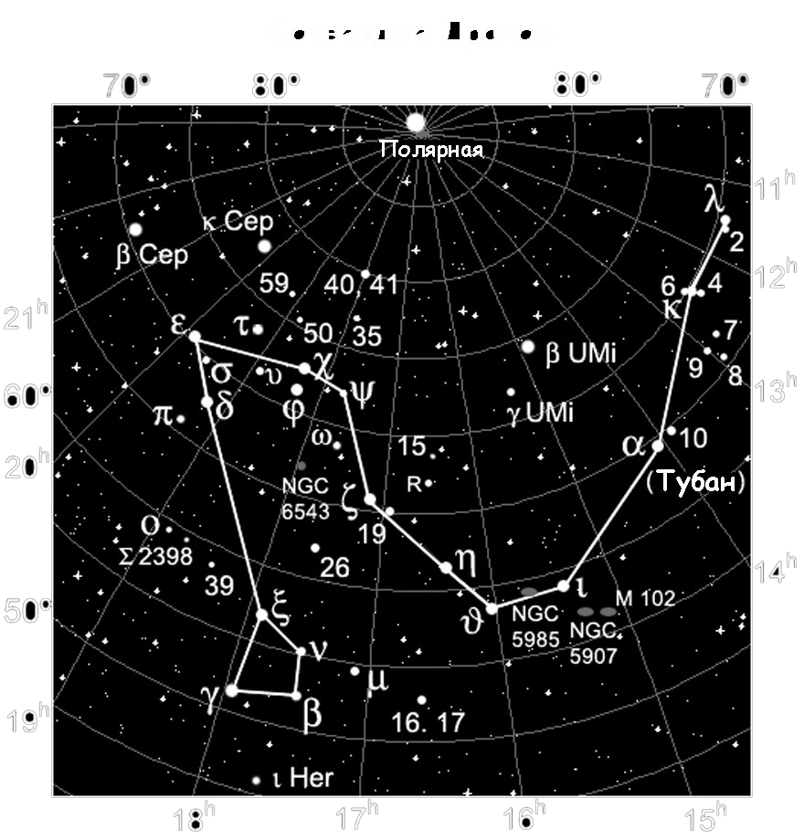

|  |
Первая звездная составляющая ДраконаЦиркумполярное северное созвездие Дракон, то есть то, которое не наблюдается в Южном полушарии и никогда не прячется за горизонтом, имеет немало двойных и переменных небесных светил. И начнем мы с первой по алфавиту, но не с самой яркой звезды Дракона – с ее альфы. По-другому эту звезду называют еще Тубан, что с арабского следует трактовать как «змей». Альфа Дракона имеет лишь третью звездную величину и по яркости среди прочих звезд созвездия занимает лишь восьмое место. Звезда Тубан размещается ровно на серединке отрезка, которым можно соединить звезды бета в созвездии Малой Медведицы и эта в Большой. Во времена, когда возводились великие пирамиды Египта, около 2600 лет до н.э., альфа Дракона выступала Полярной звездой. Но прецессия земной оси сместила ее с позиции полярной. Данная звезда имеет звездную величину 3,65m и спектральный класс A0 III. |